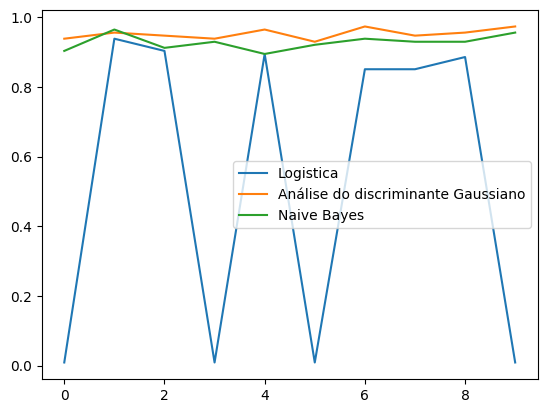
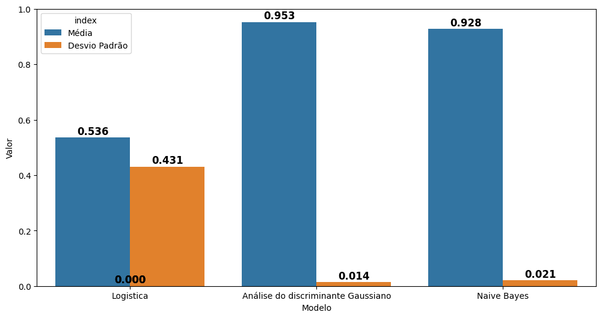
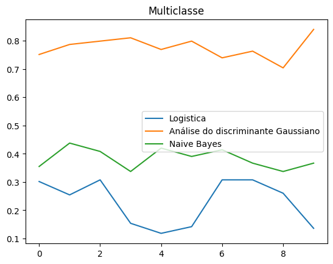
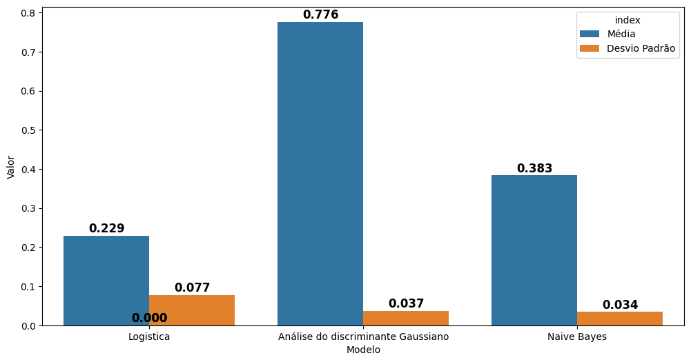

from pyprind.progbar import ProgBar
import numpy as np
import seaborn as sns
import matplotlib.pyplot as plt
import pandas as pdAlgoritmos
class regressao_logistica:
def __init__(self, X, y, tipo='gradiente', epochs=1_00, learning_rate=0.01, salvar_processo=False):
# Adicionando a coluna interceptor
self.X_ = np.c_[ np.ones(shape=(X.shape[0], 1), dtype=np.float32), X]
# Tipo de alg usado
self.tipo = tipo
# Caso seja de multiclasse muda a estrategia
self.multiclasse = True if len(np.unique(y))>2 else False
self.epochs = epochs
self.learning_rate = learning_rate
self.salvar_processo = salvar_processo
if self.multiclasse:
self.classes = np.unique(y)
self.coeficientes = np.random.rand( len(self.classes), self.X_.shape[1])
else:
self.coeficientes = np.random.rand(1, self.X_.shape[1])
# Fazendo reshape na target caso necessario
self.y = y.reshape(-1, 1) if len(y.shape) == 1 else y
#Se for multiclasse é feito o one hot encoding
if self.multiclasse and self.y.shape[1] == 1:
onehot = np.zeros((self.X_.shape[0], len(self.classes)))
for i, c in enumerate(self.classes):
onehot[:, i] = (self.y.ravel() == c).astype(float)
self.y = onehot
def ajuste(self):
match self.tipo:
case 'gradiente':
self.gradiente()
case _:
self.gradiente()
def gradiente(self):
progbar = ProgBar(self.epochs, title='Treinando modelo - gradiente', stream=1)
self.processo = []
M = self.X_.shape[0]
for epoch in range(self.epochs):
# Faz a predição com base se é multiclasses ou não
pred = self.predicao_ajuste(self.X_)
# Caso seja multiclasse usará a função softmax caso contrario a sigmoid
pred = self.sigmoid(pred) if not(self.multiclasse) else self.softmax(pred)
grad = self.learning_rate * ((1/M) * (self.y - pred).T.dot(self.X_))
self.coeficientes -= grad
perda = self.cross_entropy(pred)
progbar.update(1, item_id=f'Epoch {epoch} - perda {perda:.4f}')
if self.salvar_processo:
self.processo.append( perda )
def cross_entropy(self, pred):
return -1*np.mean(
self.y * np.log1p(pred) + ( 1 - self.y ) * np.log1p(1 - pred)
)
# Função sigmoid
def sigmoid(self, x):
return 1 / (1 + np.exp(-x))
# Função sofmax para multiclasses
def softmax(self, x):
exp_x = np.exp(x - np.max(x, axis=1, keepdims=True))
return exp_x / np.sum(exp_x, axis=1, keepdims=True)
def predicao_ajuste(self, x):
return np.dot(x, self.coeficientes.T)
def predicao(self, x):
M = x.shape[0]
x_ = np.c_[ np.ones(shape=(M, 1), dtype=np.float32), x]
if self.multiclasse:
return np.argmax(self.softmax(np.dot(x_,self.coeficientes.T)), axis=1).reshape(-1, 1)
return self.sigmoid(np.dot(x_,self.coeficientes.T))Gassian
class Gaussian:
def __init__(self, X, y):
self.X = X
self.y = y
self.classes = np.unique(y)
# Quantidade de classes, instancias e colunas sucessivamente
self.S = len(self.classes)
self.N = self.X.shape[0]
self.M = self.X.shape[1]
def ajuste(self):
# Cria uma array para guardar objetos [omega e pi]
self.omega_pi = np.empty((self.S, self.S), dtype=object)
self.sigma = np.zeros((self.M, self.M))
for c in range(self.S):
# Seleciona o array contendo uma respetiva classe
sub_x = self.X[np.hstack(self.y == c), :]
# Calcula omega e pi
self.omega_pi[c, 0] = len(sub_x)/self.N
self.omega_pi[c, 1] = np.mean(sub_x, axis=0)
sub_x = self.X[np.hstack(self.y == c), :]
self.sigma += (sub_x - self.omega_pi[c, 1]).T.dot( (sub_x - self.omega_pi[c, 1]) )
self.sigma = self.sigma/self.N
self.sigma_inv = np.linalg.inv(self.sigma)
return self
def predicao(self, x):
deltas = []
for c in range(self.S):
pi_c = self.omega_pi[c, 0]
om_c = self.omega_pi[c, 1]
parte_1 = x @ self.sigma_inv @ om_c
parte_2 = 0.5 * om_c.T @ self.sigma_inv @ om_c + np.log(pi_c)
delta = parte_1 - parte_2
deltas.append(delta)
deltas = np.array(deltas)
pred = np.array(self.classes[np.argmax(deltas, axis=0)])
return pred.reshape(-1, 1)Naive bayes
class NaiveBayesGaussiano:
def __init__(self, X, y):
self.X = X
self.y = y
self.classes = np.unique(y)
# Quantidade de classes, instancias e colunas sucessivamente
self.S = len(self.classes)
self.N = self.X.shape[0]
self.M = self.X.shape[1]
def ajuste(self):
# Cria uma array para guardar objetos [omega e pi]
self.omega_pi = np.empty((self.S, 2), dtype=object)
self.sigma_diag = np.zeros((self.S, self.M))
for c in range(self.S):
# Seleciona o array contendo uma respetiva classe
sub_x = self.X[np.hstack(self.y == self.classes[c]), :]
N_k = len(sub_x)
# PI = N_k / N
self.omega_pi[c, 0] = N_k / self.N
# omega_dk = MEAN(x_id)
self.omega_pi[c, 1] = np.mean(sub_x, axis=0)
# Variância diagonal
self.sigma_diag[c, :] = np.var(sub_x, axis=0, ddof=0)
return self
def predicao(self, x):
deltas = []
for c in range(self.S):
pi_c = self.omega_pi[c, 0]
om_c = self.omega_pi[c, 1]
var_c = self.sigma_diag[c, :]
# parte 1
parte_1 = np.sum(x * om_c / var_c, axis=1) - 0.5 * np.sum(om_c**2 / var_c)
# parte 2
parte_2 = 0.5 * np.sum(np.log(2 * np.pi * var_c)) - np.log(pi_c)
deltas.append(parte_1 - parte_2)
deltas = np.array(deltas)
pred = np.array(self.classes[np.argmax(deltas, axis=0)])
return pred.reshape(-1, 1)Metricas
As funções calcula a acuracia global e por classe
def acuracia(ytrue, ypred):
return np.divide((ytrue == ypred).astype(int).sum(), ytrue.shape[0])
def acuracia_por_classe(ytrue, ypred):
dicionario = { 'classes':[], 'total':[], 'acertos':[], 'acuracia':[] }
for i in np.unique(ytrue, sorted=True):
acertos = np.sum((ytrue == i) & (ypred == i))
total = np.sum(ytrue == i)
acuracia_i = round(acertos / total, 5)
dicionario['classes'].append(f'rotulo {i}')
dicionario['total'].append(total)
dicionario['acertos'].append(acertos)
dicionario['acuracia'].append(acuracia_i)
result = pd.DataFrame(dicionario)
return result.set_index('classes')Função abaixo dividi dados de treino e teste
def train_test(X, y, test_size = 0.2, seed=1):
rnd = np.random.RandomState(seed)
index = np.arange(X.shape[0])
rnd.shuffle(index)
test_index = index[:int(X.shape[0] * test_size)]
train_index = index[int(X.shape[0] * test_size):]
xtest = X[test_index]
ytest = y[test_index]
xtrain = X[train_index]
ytrain = y[train_index]
return xtrain, ytrain, xtest, ytestVerficia a media e desvio padrão da acucaria por classe
def trat_dfs_acu_por_classe(result):
dfs = [df for sublist in result for df in sublist]
for i, df in enumerate(dfs):
df['fold'] = i + 1
df_geral = pd.concat(dfs).reset_index()
return df_geral.groupby('classes')[['total','acertos','acuracia']].agg(['mean', 'std'])
Questão 1
from sklearn.preprocessing import StandardScalerConsidere o conjunto de dados disponível em breastcancer.csv, organizado em 31 colunas, sendo as 30 primeiras colunas os atributos e a última coluna a saída. Os 30 atributos coletados de exames médicos são usados no diagnóstico do câncer de mama, sendo 1 a classe positiva e 0 a classe negativa. Maiores detalhes sobre os dados podem ser conferidos em https://scikit-learn.org/stable/datasets/toy_dataset.html#breast-cancer-dataset.
# Lendo arquivo
breast = np.loadtxt(fname='dataset\\breastcancer.csv', delimiter=',')
breast.shape(569, 31)X = breast[:, :30].astype(np.float32)
X_scalery = breast[:, -1].astype(np.float32).reshape(-1, 1)y = breast[:, 30:].astype(np.float32)scaler = StandardScaler()
X_scaler = scaler.fit_transform(X)xtrain, ytrain, xtest, ytest = train_test(X_scaler, y)ytrain.shape, xtrain.shape((456, 1), (456, 30))a. Considerando uma validação cruzada em 10 folds, avalie modelos de classificação binária nos dados em questão. Para tanto, use as abordagens abaixo:
def folds(X, y, modelo, test_size=0.25, k=10, metrics=[], metrics_df=[]):
metrics_list = []
metrics_list_df = []
for i in range(k):
xtrain_fold, ytrain_fold, xtest_fold, ytest_fold = train_test(X, y, test_size, seed=None)
model = modelo(xtrain_fold, ytrain_fold)
model.ajuste()
pred = model.predicao(xtest_fold)
pred = (pred >= 0.5).astype(int) if not(np.any(pred.astype(int)==1)) else pred
metrics_list.append([i(ytest_fold, pred) for i in metrics])
metrics_list_df.append([i(ytest_fold, pred) for i in metrics_df])
return metrics_list, metrics_list_dfLogistica GD
result_log, result_log_df = folds(xtrain, ytrain, regressao_logistica, metrics=[acuracia], metrics_df=[acuracia_por_classe])Treinando modelo - gradiente
0% [##############################] 100% | ETA: 00:00:00 | Item ID: Epoch 99 - perda -0.6111
Total time elapsed: 00:00:00
Treinando modelo - gradiente
0% [##############################] 100% | ETA: 00:00:00 | Item ID: Epoch 99 - perda -0.5944
Total time elapsed: 00:00:00
Treinando modelo - gradiente
0% [##############################] 100% | ETA: 00:00:00 | Item ID: Epoch 99 - perda -0.6032
Total time elapsed: 00:00:00
Treinando modelo - gradiente
0% [##############################] 100% | ETA: 00:00:00 | Item ID: Epoch 99 - perda -0.6000
Total time elapsed: 00:00:00
Treinando modelo - gradiente
0% [##############################] 100% | ETA: 00:00:00 | Item ID: Epoch 99 - perda -0.6182
Total time elapsed: 00:00:00
Treinando modelo - gradiente
0% [##############################] 100% | ETA: 00:00:00 | Item ID: Epoch 99 - perda -0.6034
Total time elapsed: 00:00:00
Treinando modelo - gradiente
0% [##############################] 100% | ETA: 00:00:00 | Item ID: Epoch 99 - perda -0.6211
Total time elapsed: 00:00:00
Treinando modelo - gradiente
0% [##############################] 100% | ETA: 00:00:00 | Item ID: Epoch 99 - perda -0.5305
Total time elapsed: 00:00:00
Treinando modelo - gradiente
0% [##############################] 100% | ETA: 00:00:00 | Item ID: Epoch 99 - perda -0.5974
Total time elapsed: 00:00:00
Treinando modelo - gradiente
0% [##############################] 100% | ETA: 00:00:00 | Item ID: Epoch 99 - perda -0.6105
Total time elapsed: 00:00:00gaussiano
result_adg, result_adg_df = folds(xtrain, ytrain, Gaussian, metrics=[acuracia], metrics_df=[acuracia_por_classe])Naive bayes
result_naive, result_naive_df = folds(xtrain, ytrain, NaiveBayesGaussiano, metrics=[acuracia], metrics_df=[acuracia_por_classe])b) Para cada modelo criado, reporte valor médio e desvio padrão da acurácia global e da acurácia por classe.
Acuracia
plt.plot(result_log, label='Logistica')
plt.plot(result_adg, label='Análise do discriminante Gaussiano')
plt.plot(result_naive, label='Naive Bayes')
plt.legend()
plt.show()
results = pd.DataFrame({
'Logistica':[ np.mean(result_log),np.std(result_log)],
'Análise do discriminante Gaussiano':[ np.mean(result_adg), np.std(result_adg)],
'Naive Bayes':[np.mean(result_naive), np.std(result_naive)],
}, index=['Média', 'Desvio Padrão'])
results| Logistica | Análise do discriminante Gaussiano | Naive Bayes | |
|---|---|---|---|
| Média | 0.535965 | 0.952632 | 0.928070 |
| Desvio Padrão | 0.431102 | 0.014253 | 0.020684 |
results_melt = results.reset_index().melt(id_vars='index', var_name='Modelo', value_name='Valor')
plt.figure(figsize=(12, 6))
ax = sns.barplot(data=results_melt, x='Modelo', y='Valor', hue='index')
for p in ax.patches:
valor = p.get_height()
ax.text(
p.get_x() + p.get_width()/2, valor + 0.002,
f'{valor:.3f}',
ha='center', va='bottom', fontsize=12, fontweight='bold'
)
plt.show()
Acuracia por classe
trat_dfs_acu_por_classe(result_log_df)| total | acertos | acuracia | ||||
|---|---|---|---|---|---|---|
| mean | std | mean | std | mean | std | |
| classes | ||||||
| rotulo 0.0 | 71.0 | 3.399346 | 37.5 | 32.585784 | 0.525027 | 0.453601 |
| rotulo 1.0 | 43.0 | 3.399346 | 23.6 | 19.693202 | 0.552434 | 0.457094 |
trat_dfs_acu_por_classe(result_adg_df)| total | acertos | acuracia | ||||
|---|---|---|---|---|---|---|
| mean | std | mean | std | mean | std | |
| classes | ||||||
| rotulo 0.0 | 67.7 | 4.762119 | 66.9 | 4.458450 | 0.988454 | 0.009106 |
| rotulo 1.0 | 46.3 | 4.762119 | 41.7 | 3.713339 | 0.902415 | 0.030961 |
trat_dfs_acu_por_classe(result_naive_df)| total | acertos | acuracia | ||||
|---|---|---|---|---|---|---|
| mean | std | mean | std | mean | std | |
| classes | ||||||
| rotulo 0.0 | 70.6 | 3.777124 | 68.8 | 4.366539 | 0.974250 | 0.022830 |
| rotulo 1.0 | 43.4 | 3.777124 | 37.0 | 2.867442 | 0.853711 | 0.034406 |
Questão 2
Considere o conjunto de dados disponível em vehicle.csv, organizado em 19 colunas, sendo as 18 primeiras colunas os atributos e a última coluna a saída. Os 18 atributos caracterizam a silhueta de veículos, extraídos pelo método HIPS (Hierarchical Image Processing System). A tarefa consiste em classificar o veículo em 4 classes (bus, opel, saab, e van). Maiores detalhes sobre os dados podem ser conferidos em https://www.openml.org/search?type=data&sort=runs&id=54.
veiculos = np.loadtxt(fname='dataset\\vehicle.csv', delimiter=',')X = veiculos[:, :18].astype(np.float32)
y = veiculos[:, 18:]scaler = StandardScaler()
X_scaler = scaler.fit_transform(X)xtrain, ytrain, xtest, ytest = train_test(X_scaler, y)1. Considerando uma validação cruzada em 10 folds, avalie modelos de classificação multiclasse nos dados em questão. Para tanto, use as abordagens abaixo:
- Regressão softmax (treinado com GD ou SGD);
- Análise do discriminante Gaussiano;
- Naive Bayes Gaussiano;
SGD
result_log, result_log_df = folds(xtrain, ytrain, regressao_logistica, metrics=[acuracia], metrics_df=[acuracia_por_classe])Treinando modelo - gradiente
0% [##############################] 100% | ETA: 00:00:00 | Item ID: Epoch 99 - perda -0.4439
Total time elapsed: 00:00:01
Treinando modelo - gradiente
0% [##############################] 100% | ETA: 00:00:00 | Item ID: Epoch 99 - perda -0.4347
Total time elapsed: 00:00:00
Treinando modelo - gradiente
0% [##############################] 100% | ETA: 00:00:00 | Item ID: Epoch 99 - perda -0.4022
Total time elapsed: 00:00:00
Treinando modelo - gradiente
0% [##############################] 100% | ETA: 00:00:00 | Item ID: Epoch 99 - perda -0.4191
Total time elapsed: 00:00:00
Treinando modelo - gradiente
0% [##############################] 100% | ETA: 00:00:00 | Item ID: Epoch 99 - perda -0.4263
Total time elapsed: 00:00:00
Treinando modelo - gradiente
0% [##############################] 100% | ETA: 00:00:00 | Item ID: Epoch 99 - perda -0.4220
Total time elapsed: 00:00:00
Treinando modelo - gradiente
0% [##############################] 100% | ETA: 00:00:00 | Item ID: Epoch 99 - perda -0.4712
Total time elapsed: 00:00:01
Treinando modelo - gradiente
0% [##############################] 100% | ETA: 00:00:00 | Item ID: Epoch 99 - perda -0.4816
Total time elapsed: 00:00:00
Treinando modelo - gradiente
0% [##############################] 100% | ETA: 00:00:00 | Item ID: Epoch 99 - perda -0.4649
Total time elapsed: 00:00:00
Treinando modelo - gradiente
0% [##############################] 100% | ETA: 00:00:00 | Item ID: Epoch 99 - perda -0.4080
Total time elapsed: 00:00:00gaussian
result_adg, result_adg_df = folds(xtrain, ytrain, Gaussian, metrics=[acuracia], metrics_df=[acuracia_por_classe])naive bayes
result_naive, result_naive_df = folds(xtrain, ytrain, NaiveBayesGaussiano, metrics=[acuracia], metrics_df=[acuracia_por_classe])2. Para cada modelo criado, reporte valor médio e desvio padrão da acurácia global e da acurácia por classe.
Acuracia
plt.title('Multiclasse')
plt.plot(result_log, label='Logistica')
plt.plot(result_adg, label='Análise do discriminante Gaussiano')
plt.plot(result_naive, label='Naive Bayes')
plt.legend()
plt.show()
results = pd.DataFrame({
'Logistica':[ np.mean(result_log),np.std(result_log)],
'Análise do discriminante Gaussiano':[ np.mean(result_adg), np.std(result_adg)],
'Naive Bayes':[np.mean(result_naive), np.std(result_naive)],
}, index=['Média', 'Desvio Padrão'])
results| Logistica | Análise do discriminante Gaussiano | Naive Bayes | |
|---|---|---|---|
| Média | 0.228994 | 0.776331 | 0.383432 |
| Desvio Padrão | 0.077198 | 0.037123 | 0.033971 |
results_melt = results.reset_index().melt(id_vars='index', var_name='Modelo', value_name='Valor')
plt.figure(figsize=(12, 6))
ax = sns.barplot(data=results_melt, x='Modelo', y='Valor', hue='index')
for p in ax.patches:
valor = p.get_height()
ax.text(
p.get_x() + p.get_width()/2, valor + 0.002,
f'{valor:.3f}',
ha='center', va='bottom', fontsize=12, fontweight='bold'
)
plt.show()
Acuracia por classe
trat_dfs_acu_por_classe(result_log_df)| total | acertos | acuracia | ||||
|---|---|---|---|---|---|---|
| mean | std | mean | std | mean | std | |
| classes | ||||||
| rotulo 0.0 | 46.3 | 5.186521 | 9.5 | 8.343327 | 0.218970 | 0.199313 |
| rotulo 1.0 | 39.4 | 6.719788 | 12.7 | 12.918978 | 0.305404 | 0.286314 |
| rotulo 2.0 | 46.0 | 3.496029 | 9.5 | 8.618456 | 0.210231 | 0.195603 |
| rotulo 3.0 | 37.3 | 6.000926 | 7.0 | 10.349450 | 0.185340 | 0.290314 |
trat_dfs_acu_por_classe(result_adg_df)| total | acertos | acuracia | ||||
|---|---|---|---|---|---|---|
| mean | std | mean | std | mean | std | |
| classes | ||||||
| rotulo 0.0 | 43.4 | 6.785606 | 41.7 | 6.307843 | 0.961724 | 0.024722 |
| rotulo 1.0 | 41.3 | 4.762119 | 27.4 | 3.921451 | 0.665369 | 0.075432 |
| rotulo 2.0 | 44.4 | 3.169297 | 25.2 | 3.765339 | 0.567975 | 0.077946 |
| rotulo 3.0 | 39.9 | 5.586691 | 36.9 | 4.557046 | 0.927369 | 0.044956 |
trat_dfs_acu_por_classe(result_naive_df)| total | acertos | acuracia | ||||
|---|---|---|---|---|---|---|
| mean | std | mean | std | mean | std | |
| classes | ||||||
| rotulo 0.0 | 43.9 | 4.306326 | 0.6 | 1.074968 | 0.012709 | 0.022608 |
| rotulo 1.0 | 41.9 | 3.034981 | 21.8 | 7.997222 | 0.521476 | 0.180655 |
| rotulo 2.0 | 44.7 | 5.907622 | 7.0 | 7.257180 | 0.160697 | 0.173594 |
| rotulo 3.0 | 38.5 | 3.100179 | 35.4 | 4.141927 | 0.917697 | 0.050757 |